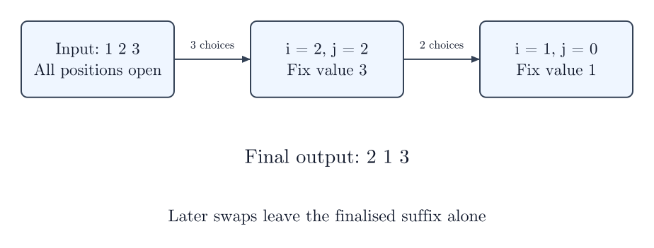
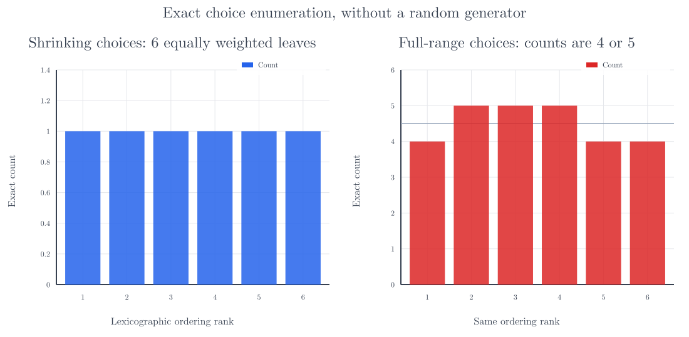
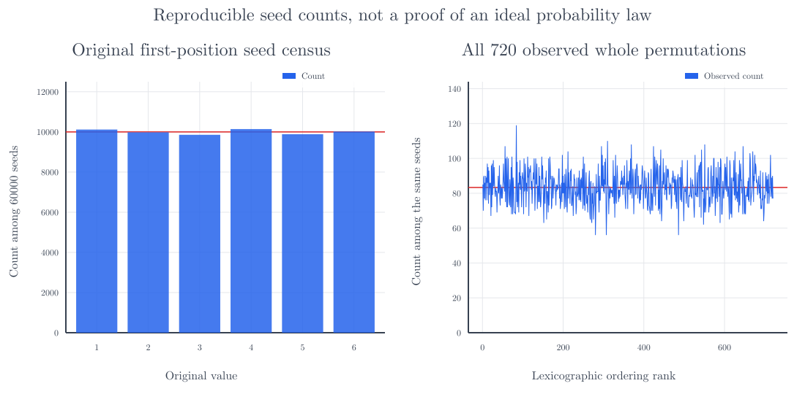
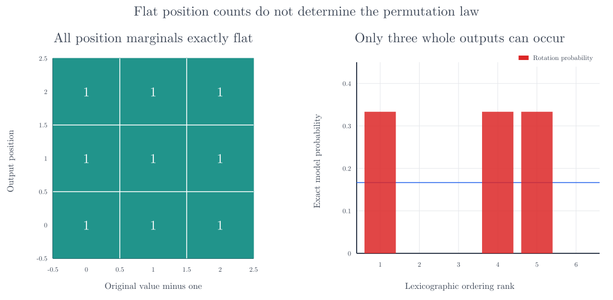
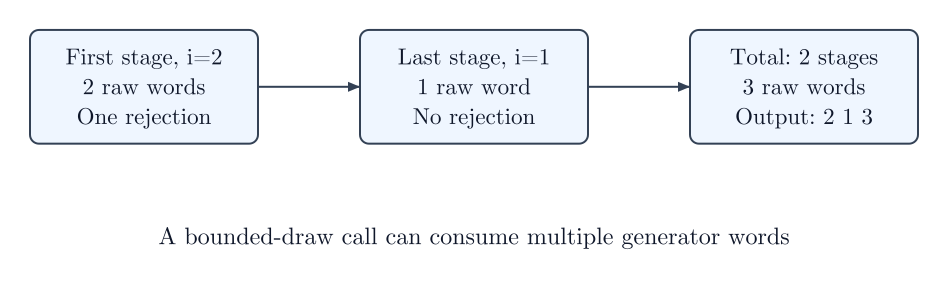

Fisher–Yates: exact choice counting and reproducible seeded shuffles
Abstract
A shuffle must rearrange a list without losing or duplicating elements; the stronger goal is to make every labelled ordering equally likely. Fisher–Yates achieves that goal under independent uniform bounded draws by finalising one position at a time. This report inspects actual native swap records, counts every choice for three elements, retains the original six-value seeded experiment, and shows why near-flat position frequencies cannot prove uniformity of entire permutations. The native seed interface is deterministic and uses a finite-state generator; its reproducibility is a different property from the ideal theorem.
The method: shrink the range after each finalised position
Starting at i=n−1 and stopping at i=1, draw j uniformly from the inclusive interval [0,i] and swap the values at i and j. Position i is then final: later stages touch only its prefix. Self-swaps are allowed. There are n−1 stages for n≥1, and none for an empty list. The implementation copies its input, then performs those in-place swaps on the owned copy.
With distinguishable input labels, each desired final value at position n−1 selects one of n original labels. Conditional on that selection, there is one required choice among n−1 remaining labels for the next position, and so on. Consequently,
Equivalently, the shrinking choice tree has n! leaves and a bijection to labelled permutations. Repeated values do not invalidate the positional algorithm, but different labelled permutations can look identical after labels are replaced by equal values.
The native sampler is the existing SplitMix64 engine with uniform_u64(0,i), using multiply-and-reject bounded draws. It is not a modulo reduction. A fixed input and 64-bit seed give a fixed output. Treating consecutive seeds as independent ideal choices would add an assumption that this reproducible interface does not establish.
A hand-checkable three-value trace
For [1,2,3], the actual seed-42 run first chooses i=2,j=2, a self-swap that finalises value 3. Next it chooses i=1,j=0 and finalises value 1. The remaining value is 2. The result is therefore [2,1,3]. The table contains values read by the shared native kernel immediately before each swap, rather than a report-local replay.
#include <dm/dm.hpp>
namespace dm=datamunge;
int main(){
std::filesystem::create_directories("build");
const auto t=dm::algorithms::fisher_yates_shuffle_trace({1,2,3},42);
std::print("| i | accepted j | value at i before | value at j before | raw words |\n| ---: | ---: | ---: | ---: | ---: |\n");
for(const auto&s:t.steps)std::print("| {} | {} | {} | {} | {} |\n",s.i,s.j,s.at_i,s.at_j,s.random_words);
std::print("\nActual output: {} {} {}; stages {}; different-position swaps {}; raw words {}.\n",t.outcome.values[0],t.outcome.values[1],t.outcome.values[2],t.outcome.stages,t.outcome.nontrivial_swaps,t.outcome.random_words);
dm::graphics::Diagram g(60,1100);dm::graphics::DiagramNodeStyle b;b.width=3.6;b.height=1.8;b.font_size=23;
g.node("input",{0,0},"Input: 1 2 3\nAll positions open",b).node("first",{5.4,0},std::format("i = {}, j = {}\nFix value {}",t.steps[0].i,t.steps[0].j,t.steps[0].at_j),b).node("second",{10.8,0},std::format("i = {}, j = {}\nFix value {}",t.steps[1].i,t.steps[1].j,t.steps[1].at_j),b).edge("input","first","3 choices").edge("first","second","2 choices").text({5.4,-2.3},std::format("Final output: {} {} {}",t.outcome.values[0],t.outcome.values[1],t.outcome.values[2]),28).text({5.4,-3.7},"Later swaps leave the finalised suffix alone",24).save_svg("build/fy_tiny.svg");
if(t.outcome.values!=std::vector<int>{2,1,3})throw std::runtime_error("tiny trace");
}| i | accepted j | value at i before | value at j before | raw words |
|---|---|---|---|---|
| 2 | 2 | 3 | 3 | 1 |
| 1 | 0 | 2 | 1 | 1 |
Actual output: 2 1 3; stages 2; different-position swaps 1; raw words 2.

Count all six ideal choices, then all twenty-seven choices of a biased model
For three labels, the Fisher–Yates choices are j_2∈{0,1,2} and j_1∈{0,1}; all six sequences give different outputs. The explicit-choice API can apply a given validated sequence without a generator. The complete census enumerates that same native swap kernel, so its six outputs can be checked against ordinary permutation enumeration.
For comparison, define a specific naive model: visit i=0,1,2 in ascending order and independently choose each j from {0,1,2}. That is 3³=27 equally weighted choice sequences. They cannot split equally among 3!=6 permutations. This counting obstruction proves bias for this model; it does not identify every possible flawed shuffle.
#include <dm/dm.hpp>
namespace dm=datamunge;
int main(){
std::filesystem::create_directories("build");
const auto good=dm::algorithms::shuffle_choice_census(3);
const auto bad=dm::algorithms::shuffle_choice_census(3,dm::algorithms::ShuffleCensusRule::AllPositions);
const auto explicit_output=dm::algorithms::fisher_yates_from_choices({1,2,3},{0,0});
std::print("Explicit choices (0,0) produce {} {} {}.\n\n",explicit_output[0],explicit_output[1],explicit_output[2]);
std::print("| output ordering | shrinking-tree count / 6 | full-range count / 27 |\n| --- | ---: | ---: |\n");
std::vector<double>x,a,b;std::size_t rank=0;
for(const auto&[p,count]:good.permutation_counts){const auto other=bad.permutation_counts.at(p);std::print("| {}{}{} | {} | {} |\n",p[0]+1,p[1]+1,p[2]+1,count,other);x.push_back(++rank);a.push_back(count);b.push_back(other);}
std::print("\nExact outcomes: shrinking {}; all-positions {}; distinct outputs {} and {}.\n",good.outcomes,bad.outcomes,good.permutation_counts.size(),bad.permutation_counts.size());
auto left=dm::graphics::RPlot::create();left.bars(x,a,"Count",{37,99,235}).title("Shrinking choices: 6 equally weighted leaves").x_label("Lexicographic ordering rank").y_label("Exact count").x_limits(.4,6.6).y_limits(0,1.4);
auto right=dm::graphics::RPlot::create();right.bars(x,b,"Count",{220,38,38}).abline_h(27./6,{148,163,184},1.5).title("Full-range choices: counts are 4 or 5").x_label("Same ordering rank").y_label("Exact count").x_limits(.4,6.6).y_limits(0,6);
dm::graphics::RLayout::create(1,2).add(left).add(right).size(1100,540).title("Exact choice enumeration, without a random generator").fit_panels().save_svg("build/fy_choices.svg");
}Explicit choices (0,0) produce 2 3 1.
| output ordering | shrinking-tree count / 6 | full-range count / 27 |
|---|---|---|
| 123 | 1 | 4 |
| 132 | 1 | 5 |
| 213 | 1 | 5 |
| 231 | 1 | 5 |
| 312 | 1 | 4 |
| 321 | 1 | 4 |
Exact outcomes: shrinking 6; all-positions 27; distinct outputs 6 and 6.

Retain the original six-value experiment and measure the current library
Use the original values [1,2,3,4,5,6], seed 42 and consecutive seeds 0 through 59,999. Before changing the shuffle implementation, the original complete program was executed against the current canonical sampler and its output frozen. That execution gives [3,6,4,2,1,5] for seed 42 and the counts below. The source report's stored [5,4,1,3,6,2] and older tally were stale relative to that pre-conversion execution. The new kernel preserves the executed baseline, rather than retaining those stale printed results.
The census labels original positions 0 through 5; label v corresponds to original value v+1. It counts every output position and whole permutations in the core. The displayed first-position marginal retains the original experiment, while the right plot shows all 720 observed complete orderings in lexicographic order. The reference of 60,000/720 is an ideal benchmark, not an expectation established by sequential seed enumeration.
#include <dm/dm.hpp>
namespace dm=datamunge;
int main(){
std::filesystem::create_directories("build");
const std::vector<int> items{1,2,3,4,5,6};const auto a=dm::algorithms::fisher_yates_shuffle(items,42),again=dm::algorithms::fisher_yates_shuffle(items,42);
std::print("Seed 42: {} {} {} {} {} {}; repeated seed agrees {}.\n\n",a[0],a[1],a[2],a[3],a[4],a[5],a==again);
const auto c=dm::algorithms::fisher_yates_seed_census(6,0,60000);
std::print("| original value | first-position count | ideal benchmark | relative deviation |\n| ---: | ---: | ---: | ---: |\n");
std::vector<double>x,y;for(std::size_t v=0;v<6;++v){const double count=c.by_position[0][v];std::print("| {} | {} | 10000 | {:.2f}% |\n",v+1,c.by_position[0][v],100*(count/10000-1));x.push_back(v+1);y.push_back(count);}
std::vector<double>rank,frequency;for(const auto&[p,count]:c.permutation_counts){rank.push_back(rank.size()+1);frequency.push_back(count);}
const auto mm=std::minmax_element(frequency.begin(),frequency.end());
std::print("\nSeeded census: executions {}; observed whole outputs {}; smallest count {:.0f}; largest count {:.0f}; admitted units {}.\n",c.outcomes,c.permutation_counts.size(),*mm.first,*mm.second,c.work_units);
auto first=dm::graphics::RPlot::create();first.bars(x,y,"Count",{37,99,235}).abline_h(10000,{220,38,38},1.5).title("Original first-position seed census").x_label("Original value").y_label("Count among 60000 seeds").x_limits(.4,6.6).y_limits(0,12500);
auto joint=dm::graphics::RPlot::create();joint.line(rank,frequency,"Observed count",{37,99,235},1).abline_h(60000./720,{220,38,38},1.5).title("All 720 observed whole permutations").x_label("Lexicographic ordering rank").y_label("Count among the same seeds").y_limits(0,*mm.second+25);
dm::graphics::RLayout::create(1,2).add(first).add(joint).size(1100,540).title("Reproducible seed counts, not a proof of an ideal probability law").fit_panels().save_svg("build/fy_original.svg");
if(c.by_position[0]!=std::vector<std::uint64_t>{10118,9980,9856,10141,9886,10019})throw std::runtime_error("frozen original tally");
}Seed 42: 3 6 4 2 1 5; repeated seed agrees true.
| original value | first-position count | ideal benchmark | relative deviation |
|---|---|---|---|
| 1 | 10118 | 10000 | 1.18% |
| 2 | 9980 | 10000 | -0.20% |
| 3 | 9856 | 10000 | -1.44% |
| 4 | 10141 | 10000 | 1.41% |
| 5 | 9886 | 10000 | -1.14% |
| 6 | 10019 | 10000 | 0.19% |
Seeded census: executions 60000; observed whole outputs 720; smallest count 56; largest count 119; admitted units 420036.

Exactly flat marginals can still hide a nonuniform joint law
Consider only the three cyclic rotations 123,231,312, each chosen equally often. Every label appears once at every output position. All nine marginal cells therefore have exactly the same count. Yet half of the six permutations are impossible. This is a concrete counterexample to the original claim that flat position bars alone establish an unbiased shuffle. Even checking every position is insufficient.
The following exact rotation census is a deliberate comparison model, without a pseudorandom generator. Count probabilities by dividing its multiplicities by three; the ideal Fisher–Yates multiplicities must instead be divided by six.
#include <dm/dm.hpp>
namespace dm=datamunge;
int main(){
std::filesystem::create_directories("build");
const auto ideal=dm::algorithms::shuffle_choice_census(3);
const auto cyclic=dm::algorithms::shuffle_choice_census(3,dm::algorithms::ShuffleCensusRule::CyclicShift);
std::print("| output position | count of value 1 | count of value 2 | count of value 3 |\n| ---: | ---: | ---: | ---: |\n");
std::vector<std::vector<double>>z(3,std::vector<double>(3));for(std::size_t p=0;p<3;++p){std::print("| {} | {} | {} | {} |\n",p,cyclic.by_position[p][0],cyclic.by_position[p][1],cyclic.by_position[p][2]);for(std::size_t v=0;v<3;++v)z[v][p]=cyclic.by_position[p][v];}
std::print("\n| ordering | ideal probability | rotation-only probability |\n| --- | ---: | ---: |\n");
std::vector<double>rank,probability;for(const auto&[p,count]:ideal.permutation_counts){const auto it=cyclic.permutation_counts.find(p);const double probability_here=it==cyclic.permutation_counts.end()?0:double(it->second)/cyclic.outcomes;std::print("| {}{}{} | {:.6f} | {:.6f} |\n",p[0]+1,p[1]+1,p[2]+1,double(count)/ideal.outcomes,probability_here);rank.push_back(rank.size()+1);probability.push_back(probability_here);}
auto heat=dm::graphics::RPlot::create();heat.image({0,1,2},{0,1,2},z,dm::graphics::viridis_colors(32),0,2).title("All position marginals exactly flat").x_label("Original value minus one").y_label("Output position").x_limits(-.5,2.5).y_limits(-.5,2.5).margins(95,95,65,75);
heat.segments({.5,1.5,-.5,-.5},{-.5,-.5,.5,1.5},{.5,1.5,2.5,2.5},{2.5,2.5,.5,1.5},{255,255,255},1.5);
for(std::size_t row=0;row<3;++row)for(std::size_t col=0;col<3;++col)heat.text(col,row,std::to_string(cyclic.by_position[row][col]),{255,255,255},24);
auto joint=dm::graphics::RPlot::create();joint.bars(rank,probability,"Rotation probability",{220,38,38}).abline_h(1./6,{37,99,235},1.5).title("Only three whole outputs can occur").x_label("Lexicographic ordering rank").y_label("Exact model probability").x_limits(.4,6.6).y_limits(0,.45);
dm::graphics::RLayout::create(1,2).add(heat).add(joint).size(1100,540).title("Flat position counts do not determine the permutation law").fit_panels().save_svg("build/fy_marginals.svg");
}| output position | count of value 1 | count of value 2 | count of value 3 |
|---|---|---|---|
| 0 | 1 | 1 | 1 |
| 1 | 1 | 1 | 1 |
| 2 | 1 | 1 | 1 |
| ordering | ideal probability | rotation-only probability |
|---|---|---|
| 123 | 0.166667 | 0.333333 |
| 132 | 0.166667 | 0.000000 |
| 213 | 0.166667 | 0.000000 |
| 231 | 0.166667 | 0.333333 |
| 312 | 0.166667 | 0.333333 |
| 321 | 0.166667 | 0.000000 |

Work, bounded evidence and an actual sampler retry
There are n−1 swap attempts, including self-swaps. A returned-vector API also copies n values, so its storage is O(n). Trace capture adds an owned input copy and one record per stage; the complete cap counts C=2n+max(n−1,0) entries before copying or drawing. The default is one million entries; zero disables only that optional cap. Entry counts are not bytes, peak memory or runtime. The ordinary and work APIs have no history cap.
Bounded integer draws may consume more than one raw word. For the 64-bit multiply-and-reject sampler with range size s, the threshold is 2^64 mod s; a product whose low word is below that threshold is rejected. For the special seed below, the first SplitMix64 word is zero. At the first three-element stage, s=3 and the threshold is one, so that word is rejected. The actual shared sampler then accepts a later word. This is an exercised retry, not an assumption that every stage always consumes one word.
Under independent uniform raw words the acceptance probability is greater than one half, so expected sampler work is bounded by a constant per stage. There is no deterministic fixed retry bound in that ideal model. The work counter measures actual retries for a specified seed; it does not infer speed or statistical independence.
#include <dm/dm.hpp>
namespace dm=datamunge;
int main(){
std::filesystem::create_directories("build");
constexpr std::uint64_t seed=0x61c8864680b583ebULL;
const auto t=dm::algorithms::fisher_yates_shuffle_trace({1,2,3},seed,8);
std::print("| retry-control i | accepted j | raw words consumed |\n| ---: | ---: | ---: |\n");for(const auto&s:t.steps)std::print("| {} | {} | {} |\n",s.i,s.j,s.random_words);
std::print("\nRetry control: stages {}; raw words {}; output {} {} {}.\n",t.outcome.stages,t.outcome.random_words,t.outcome.values[0],t.outcome.values[1],t.outcome.values[2]);
bool under=false;try{(void)dm::algorithms::fisher_yates_shuffle_trace({1,2,3},seed,7);}catch(const std::length_error&){under=true;}
bool census_under=false;try{(void)dm::algorithms::shuffle_choice_census(3,dm::algorithms::ShuffleCensusRule::FisherYates,32);}catch(const std::length_error&){census_under=true;}
const auto exact=dm::algorithms::shuffle_choice_census(3,dm::algorithms::ShuffleCensusRule::FisherYates,33);
auto changed=t;changed.input[0]=99;changed.outcome.values[0]=99;
std::print("Trace cap 8 succeeds, 7 rejects {}; choice-census cap 33 succeeds, 32 rejects {}; exact outcomes {}.\n",under,census_under,exact.outcomes);
std::print("Owned copy: original first input {}; original first output {}; edited copy first output {}.\n",t.input[0],t.outcome.values[0],changed.outcome.values[0]);
std::print("\n| input length | swap attempts | different-position swaps | raw words |\n| ---: | ---: | ---: | ---: |\n");
for(std::size_t n:{0,1,3,6,32,1000}){std::vector<int>a(n);std::iota(a.begin(),a.end(),0);const auto r=dm::algorithms::fisher_yates_shuffle_work(a,42);std::print("| {} | {} | {} | {} |\n",n,r.stages,r.nontrivial_swaps,r.random_words);}
dm::graphics::Diagram g(60,1100);dm::graphics::DiagramNodeStyle b;b.width=3.8;b.height=1.9;b.font_size=23;
g.node("first",{0,0},std::format("First stage, i=2\n{} raw words\nOne rejection",t.steps[0].random_words),b).node("last",{5.5,0},std::format("Last stage, i=1\n{} raw word\nNo rejection",t.steps[1].random_words),b).node("result",{11,0},std::format("Total: {} stages\n{} raw words\nOutput: {} {} {}",t.outcome.stages,t.outcome.random_words,t.outcome.values[0],t.outcome.values[1],t.outcome.values[2]),b).edge("first","last").edge("last","result").text({5.5,-2.5},"A bounded-draw call can consume multiple generator words",24).save_svg("build/fy_controls.svg");
if(!under||!census_under||t.outcome.random_words!=3)throw std::runtime_error("quota or retry check");
}| retry-control i | accepted j | raw words consumed |
|---|---|---|
| 2 | 2 | 2 |
| 1 | 0 | 1 |
Retry control: stages 2; raw words 3; output 2 1 3. Trace cap 8 succeeds, 7 rejects true; choice-census cap 33 succeeds, 32 rejects true; exact outcomes 6. Owned copy: original first input 1; original first output 2; edited copy first output 99.
| input length | swap attempts | different-position swaps | raw words |
|---|---|---|---|
| 0 | 0 | 0 | 0 |
| 1 | 0 | 0 | 0 |
| 3 | 2 | 1 | 2 |
| 6 | 5 | 5 | 5 |
| 32 | 31 | 27 | 31 |
| 1000 | 999 | 995 | 999 |

Finite seeds and the limits of the experiment
A deterministic function of a 64-bit seed has at most 264 distinct outputs. Already 21!=51,090,942,171,709,440,000 exceeds 264=18,446,744,073,709,551,616, so a 21-element shuffle initialised only by this seed cannot reach every labelled permutation. Moreover, for n≥3, n! has a factor of three and cannot divide 2^64. Even an exhaustive uniform choice among all 64-bit seeds cannot split equally among every permutation. This does not contradict the ideal theorem, whose independent uniform bounded choices are a different probability space.
The native seed census counts a nonwrapping interval of consecutive seeds. Its cap uses C=n²+trials(n+1), accounting for the complete position matrix and execution/label entries. Whole-output map comparisons and allocations add overhead: this cap is an admission bound, not an exact operation count. The exact-choice census substitutes n!, n^n or max(n,1) for trials. Container, label and count-overflow checks remain in force when optional caps are disabled. Zero trials have an empty whole-output map; an empty input has one empty possible ordering, counted once per actual execution.
The tiny choice census establishes the bijection for that finite ideal model. The seed experiment establishes reproducible counts for the specified engine and seed interval. The rotation control establishes that position marginals do not identify a joint permutation distribution. These are useful, separate claims. No external dataset is needed: labelled permutations are the direct objects of study.
References
- R. Durstenfeld (1964), [Algorithm 235: Random permutation](https://doi.org/10.1145/364520.364540), Communications of the ACM 7(7),420. The citation is verified; the executable descending form is also given in Lemire's Algorithm 1 below.
- P. E. Black, [Fisher-Yates shuffle](https://xlinux.nist.gov/dads/HTML/fisherYatesShuffle.html), NIST Dictionary of Algorithms and Data Structures, updated 2023. Describes linear-time shrinking ranges and the finite-generator support limitation.
- P. J. Haas (2020), [Correctness Proof for Fisher-Yates Shuffle](https://people.cs.umass.edu/~phaas/CS590M/handouts/Fisher-Yates-proof.pdf). Conditional selection probabilities give the ideal permutation law.
- D. Lemire (2019), [Fast Random Integer Generation in an Interval](https://arxiv.org/html/1805.10941), ACM Transactions on Modeling and Computer Simulation 29(1), article 3, [DOI](https://doi.org/10.1145/3230636). Algorithm 1 gives the shuffle; the range-reduction analysis explains the shared multiply-and-reject sampler.